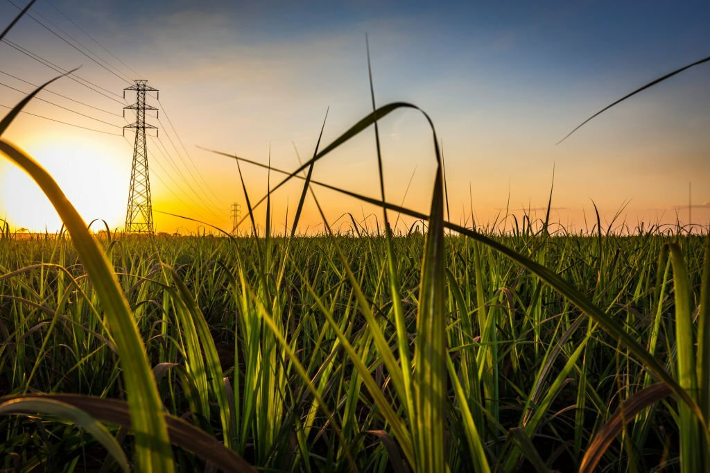

At AgriDetect, we are committed to revolutionizing precision agriculture through the power of AI and remote sensing technology. Our mission is to empower farmers to optimize their agricultural practices, ultimately boosting crop yields while minimizing water and chemical consumption.
Our Vision
We envision a future where agriculture becomes smarter, more efficient, and environmentally sustainable. Through cutting-edge advancements in artificial intelligence and remote sensing, AgriDetect aims to be at the forefront of this agricultural transformation.
Why AgriDetect?
Agriculture: We harness the latest AI and remote sensing techniques to provide precise insights and recommendations for farmers, enabling them to make data-driven decisions.
Yield Enhancement: Our solutions are designed to maximize crop yields, ensuring that farmers get the most out of their land and resources.
Environmental Responsibility: AgriDetect is dedicated to reducing the environmental footprint of agriculture by helping farmers minimize water usage and chemical inputs.
Our Team
Our team consists of passionate individuals with expertise in AI, remote sensing, and agriculture. We are united by a shared commitment to revolutionize the farming industry and make a positive impact on the world.
Join us on our journey to transform agriculture and shape a more sustainable future. Together, we can cultivate a world where technology and nature coexist harmoniously for the benefit of all.